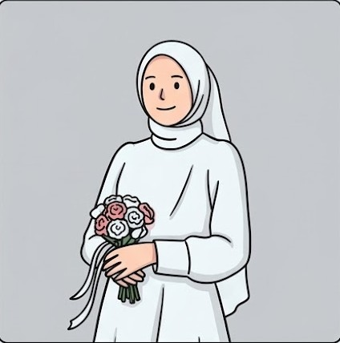

.png)
The Wedding of
Tanti & Isnan
28 . 03 . 2026
Yth. Bapak/Ibu/Saudara/i:
28 . 03 . 2026
Yth. Bapak/Ibu/Saudara/i:
"Dan di antara tanda-tanda (kebesaran)-Nya ialah Dia menciptakan pasangan-pasangan untukmu dari jenismu sendiri, agar kamu cenderung dan merasa tenteram kepadanya, dan Dia menjadikan di antaramu rasa kasih dan sayang. Sesungguhnya pada yang demikian itu benar-benar terdapat tanda-tanda (kebesaran Allah) bagi kaum yang berpikir."
(QS. Ar-Rum: 21)

Putri dari Bapak Mhd. Soleh Siregar & Ibu Rosdiana Daulay
InstagramTidak ada yang kebetulan di dunia ini, semua sudah tersusun rapi oleh sang maha kuasa. kita tidak bisa memilih kepada siapa kita akan jatuh cinta. kami tetangga dekat yang ketemu gede, bertemu tanpa sengaja pada pertengahan oktober 2025 tepatnya saat beliau pulang kekampung kami, tidak ada yang menyangka bahwa pertemuan itu membawa kami pada suatu ikatan suci. Pendekatan hari demi hari kami saling mengenal. bukan hanya tentang bahagia, tetapi juga tentang perbedaan, luka, dan doa. karena cinta bukan tentang kesempurnaan, melainkan tentang saling bertahan...
Dengan keyakinan yang kuat, dan restu dari kedua keluarga, kami mengikat sebuah janji dalam lamaran pada 12 desember 2025 sebagai langkah serius ,menuju masa depan bersama....
Kini, dengan niat yang sama dan doa yang menyertai, kami memilih untuk menyempurnakan perjalanan ini dalam ikatan suci pernikahan sebagai awal baru untuk berbagi hidup, tumbuh, dan menua bersama...
Pukul 14.00 WIB- Selesai
Bagas Godang Mhd. Soleh Siregar / Kediaman Mempelai Wanita
Pukul 08.00 WIB - Selesai
Bagas Godang Mhd. Soleh Siregar / Kediaman Mempelai Wanita
Mhd. Soleh Siregar (Ayah)
Rosdiana Daulay (Ibu)
Alm. Solahuddin Hrp (Ayah)
Nur Hawani Siregar (Ibu)
Doa Restu Anda merupakan karunia yang sangat berarti bagi kami.
Namun jika ingin memberi tanda kasih, dapat melalui:
Bank BSI: 7337586133
A/N: TANTI KHAIRANI
Berikan ucapan manis untuk kedua mempelai
*Rekaman doa Anda akan tersimpan otomatis di sistem kami
"Kehadiran Anda adalah kado terindah bagi kami."
Horas, Horas, Horas!